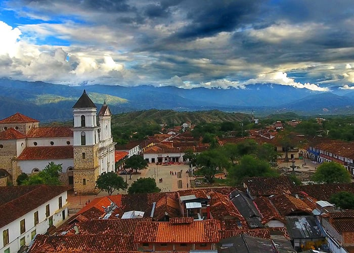

TOUR A SANTA FE DE ANTIOQUIA
"La Ciudad Madre"
Santa Fe de Antioqia Es Uno de Los principales Municipios del Departamento de Antioquia. Un Pueblo lleno de historia y tradición. De calles empedradas, posee 8 Iglesias y una gran cantidad de casas de los siglos XVI y XVII. Fue Fundada por el Mariscal Jorge Robledo Ortiz en el Valle de Ebéjico, el 4 de diciembre de 1541. Es de las visitas obligadas de los turistas que pasan por Medellín. Es un Municipio que mezcla la historia de la época de la colonia con sus tradiciones y lujos. Santa Fe de Antioquia es un Pueblo Mágico, Patrimonio Cultural de Colombia que guarda los tesoros históricos más importantes del período colonial y republicano. Fuè la primera capital del departamento de Antioquia, antes que Medellín, por eso es llamada “La Ciudad Madre”. Por su bien conservada arquitectura Colonial fue declarada Monumento Nacional de Colombia.
Caja 1

Situado a 56 kilómetros de Medellín, en el occidente del departamento de Antioquia, se viaja por la carretera que va hacia el Golfo del Urabá. A aproximadamente 1.20 minutos Medellín.
Caja 2

Cuenta con un clima de 27 grados centígrados en promedio, Por su altura sobre el nivel del mar y su cercania al río Cauca y a otros rios su temperatura es un tanto alta.
Caja 3

Te sorprenderá la vegetación de sus parques, la ornamentación de las casas que se ven cuando caminas por sus callesbempedradas bajo el cielo azul.
Caja 4

También puedes encontrar balnearios, el Rio Cauca y el rio Tonusco además de varias quebradas.
Caja 5

También puedes encontrar balnearios, el Rio Cauca y el rio Tonusco además de varias quebradas.
Caja 6

También puedes encontrar balnearios, el Rio Cauca y el rio Tonusco además de varias quebradas.
INCLUYE:
- ● Transporte en vehículos especiales de turismo
- ● Desayuno, Almuerzo
- ● Recorrido histórico y patrimonial por Santa Fe de Antioquia:
- - Museo Juan del Corral
- - Iglesia y parque Santa Bárbara
- - Catedral basílica de la inmaculada concepción
- - Parque principal
- - Iglesia y parque Nuestra Señora de Chiquinquirá
- - Visita a los talleres de filigrana en Santa Fe de Antioquia
- - Visita al Puente de Occidente (Patrimonio Nacional)
- ● Guía acompañante
- ● Tarjeta de asistencia médica
- NO INCLUYE:
- ● Cualquier otro cargo no descrito en el numeral anterior.